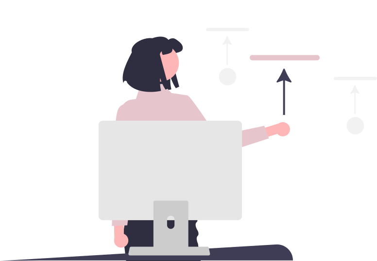

Servicios
El cuidado de las uñas hablan de la personalidad de cada mujer.En TamiNails, además lo convertimos en un momento único
Los servicios que brindamos

Esculpidas
Las uñas esculpidas son extensiones que se construyen a partir de la uña natural con material acrílico o gel. Estas permiten restaurar y reconstruir uñas mordidas o simplemente, lucir uñas más largas. Algo que las hace sumamente atractivas, ya que se puede moldear la forma y longitud para obtener varios estilos
Soft gel
El soft gel es un sistema express, el cual se extiende el largo de la uña natural con un tip

Press on nails
Las uñas press on nails, son uñas postizas personalizadas a medida de cada clienta.

Capping gel
El capping consiste en aplicar una fina capa de acrílico o gel fortificador sobre la uña que actuará como una barrera protectora. A diferencia de las uñas esculpidas, este baño en gel capping no alarga la uña natural sino que acompaña el crecimiento de la misma y dura hasta 20 días.

Semipermanente
El esmaltado semipermanente es un sistema de duración corta, entorno 2-3 semanas, sin hacer extensión de la uña, es decir, no se puede alargar la uña con este tipo de esmalte.Lo puedes encontrar en diferentes colores, ya que es un híbrido de esmalte y gel.